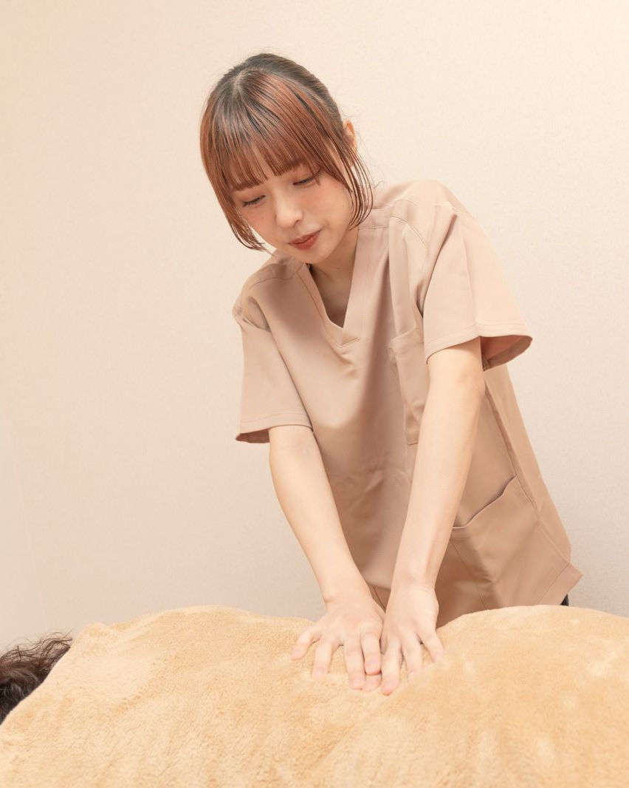

- トップ
- はじめての方へ
First visit
はじめての方へ
整体ははじめて、という方がほとんどです。どんなことをするのか、当日どうすればいいのかを、先にお伝えします。
Policy
強くしない、
急がない。
からだが固くなるのは、がんばっている証拠でもあります。肩や腰は、毎日の姿勢やくせを支えるために、少しずつ結び目をつくっていきます。
ほどくでは、その結び目を力でほどくのではなく、手のひらでゆっくり圧をかけ、筋肉が自分からゆるむのを待ちます。ボキボキ鳴らしたり、痛みをがまんしてもらったりする施術はしません。
そのぶん、1回でぜんぶを変えようとはしません。何回で、どこまで楽になりたいか。毎回いっしょに決めていきます。
Flow
当日の流れ（はじめての日は約90分）
お越しになったら
ご予約の5分前くらいにお越しください。インターホンを押していただければ、ドアを開けます。お車の方は院の前の駐車場へどうぞ。
お着替え
上下の着替えをご用意しています。カーテンで仕切った場所で着替えられます。
お話を聞く（約15分）
いつから、どんなときにつらいか、お仕事や家での過ごし方。紙の問診票は使わず、お話をうかがいながら院長がメモをとります。
からだを見る（約10分）
立ち方、座り方、首と肩の動きを一緒に確かめます。どこから ほどくかを決めて、紙に書いてお渡しします。
整体（60分）
うつぶせ・横向き・あおむけで、手のひらで圧をかけていきます。強さは何度もおたずねします。眠ってしまっても大丈夫です。
おうちでのこと・お会計
今日の体操をひとつだけお伝えします。次に来る目安は無理のない間隔で。回数券をむりにすすめることはありません。
Before you come
服装と持ちもの
持ってくるもの
- とくにありません。着替えもタオルも院にあります
- 病院に通っている方は、お薬手帳があると安心です
- 産後ケアの方は、お子さまのおむつ・飲みものを
こんなときは、先にご相談ください
- 手足のしびれ、熱がある、ケガをしたばかり
- 妊娠中の方（時期によって受けられないことがあります）
- 食事のすぐあと（1時間ほどあけるのがおすすめです）
整体は医療行為ではありません。病気の診断や治療はできないため、必要なときは病院での受診をおすすめします。

Director
院長 宮下 さき
藤沢市生まれ。柔道整復師の資格をとってから、整形外科のリハビリ室で9年働きました。病院では、ひとりに使える時間が10分ほど。「もう少し話を聞けたら」と思うことがたくさんありました。
2021年、ひとりの方に60分きちんと向き合える場所をつくろうと、地元の辻堂で ほどくを開きました。休みの日は、海ぞいを30分歩くのが日課です。
- 2012柔道整復師の資格をとる
- 2012藤沢市内の整形外科でリハビリを担当（9年）
- 2019産後の骨盤ケアの講習を受ける
- 2021整体院 ほどく を開く